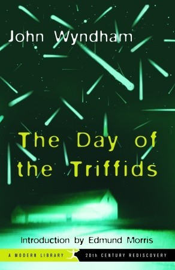

Science Fiction
Children of Time
| Book Ratings |
| Goodreads |
Mine |
| 4.28 |
4.00 |

The last remnants of the human race left a dying Earth, desperate to find a new home
among the stars. Following in the footsteps of their ancestors, they discover the
greatest treasure of the past age—a world terraformed and prepared for human life.
But all is not right in this new Eden. In the long years since the planet was abandoned,
the work of its architects has borne disastrous fruit. The planet is not waiting for
them, pristine and unoccupied. New masters have turned it from a refuge into mankind's
worst nightmare.
Now two civilizations are on a collision course, both testing the boundaries of what
they will do to survive. As the fate of humanity hangs in the balance, who are the
true heirs of this new Earth?
Dark Matter
| Book Ratings |
| Goodreads |
Mine |
| 4.09 |
4 |

'Are you happy in your life?'
Those are the last words Jason Dessen hears before the masked abductor knocks him
unconscious. Before he awakes to find himself strapped to a gurney, surrounded by
strangers in hazmat suits. Before the man he's never met smiles down at him and says,
'Welcome back.'
In this world he's woken up to, Jason's life is not the one he knows. His wife is
not his wife. His son was never born. And Jason is not an ordinary college physics
professor, but a celebrated genius who has achieved something remarkable. Something
impossible.
Is it this world or the other that's the dream?
And even if the home he remembers is real, how can Jason possibly make it back to
the family he loves? The answers lie in a journey more wondrous and horrifying than
anything he could've imagined - one that will force him to confront the darkest parts
of himself even as he battles a terrifying, seemingly unbeatable foe.
Kill Process
| Book Ratings |
| Goodreads |
Mine |
| 4.08 |
5.00 |
By day, Angie, a twenty-year veteran of the tech industry, is a data analyst at Tomo,
the world's largest social networking company; by night, she exploits her database
access to profile domestic abusers and kill the worst of them. She can't change her
own traumatic past, but she can save other women.
When Tomo introduces a deceptive new product that preys on users' fears to drive up
its own revenue, Angie sees Tomo for what it really is--another evil abuser. Using
her coding and hacking expertise, she decides to destroy Tomo by building a new social
network that is completely distributed, compartmentalized, and unstoppable. If she
succeeds, it will be the end of all centralized power in the Internet.
But how can an anti-social, one-armed programmer with too many dark secrets succeed
when the world's largest tech company is out to crush her and a no-name government
black ops agency sets a psychopath to look into her growing digital footprint?"
The Day of the Triffids
| Book Ratings |
| Goodreads |
Mine |
| 4.02 |
4 |
Bill Masen, bandages over his wounded eyes, misses the most spectacular meteorite
shower England has ever seen. Removing his bandages the next morning, he finds masses
of sightless people wandering the city. He soon meets Josella, another lucky person
who has retained her sight, and together they leave the city, aware that the safe,
familiar world they knew a mere twenty-four hours before is gone forever.
But to survive in this post-apocalyptic world, one must survive the Triffids, strange
plants that years before began appearing all over the world. The Triffids can grow
to over seven feet tall, pull their roots from the ground to walk, and kill a man
with one quick lash of their poisonous stingers. With society in shambles, they are
now poised to prey on humankind. Wyndham chillingly anticipates bio-warfare and mass
destruction, fifty years before their realization, in this prescient account of Cold
War paranoia.
The Postmortal
| Book Ratings |
| Goodreads |
Mine |
| 3.79 |
4 |
John Farrell is about to get "The Cure."
Old age can never kill him now.
The only problem is, everything else still can...
Imagine a near future where a cure for aging is discovered and-after much political
and moral debate-made available to people worldwide. Immortality, however, comes with
its own unique problems-including evil green people, government euthanasia programs,
a disturbing new religious cult, and other horrors.
Witty, eerie, and full of humanity, The Postmortal is an unforgettable thriller that
envisions a pre-apocalyptic world so real that it is completely terrifying.
Horror
The Fisherman
| Book Ratings |
| Goodreads |
Mine |
| 3.97 |
3.5 |
In upstate New York, in the woods around Woodstock, Dutchman's Creek flows out of
the Ashokan Reservoir. Steep-banked, fast-moving, it offers the promise of fine fishing,
and of something more, a possibility too fantastic to be true. When Abe and Dan, two
widowers who have found solace in each other's company and a shared passion for fishing,
hear rumors of the Creek, and what might be found there, the remedy to both their
losses, they dismiss it as just another fish story. Soon, though, the men find themselves
drawn into a tale as deep and old as the Reservoir. It's a tale of dark pacts, of
long-buried secrets, and of a mysterious figure known as Der Fisher: the Fisherman.
It will bring Abe and Dan face to face with all that they have lost, and with the
price they must pay to regain it.
The Only Good Indians
| Book Ratings |
| Goodreads |
Mine |
| 3.85 |
3.00 |
A tale of revenge, cultural identity, and the cost of breaking from tradition in this
latest novel from the Jordan Peele of horror literature, Stephen Graham Jones.
Seamlessly blending classic horror and a dramatic narrative with sharp social commentary,
The Only Good Indians follows four American Indian men after a disturbing event from
their youth puts them in a desperate struggle for their lives. Tracked by an entity
bent on revenge, these childhood friends are helpless as the culture and traditions
they left behind catch up to them in a violent, vengeful way.
Fantasy
Storm Front
| Book Ratings |
| Goodreads |
Mine |
| 3.99 |
4 |
Harry Dresden is the best at what he does. Well, technically, he's the only at what
he does. So when the Chicago P.D. has a case that transcends mortal creativity or
capability, they come to him for answers. For the "everyday" world is actually full
of strange and magical things—and most don't play well with humans. That's where Harry
comes in. Takes a wizard to catch a—well, whatever. There's just one problem. Business,
to put it mildly, stinks.
So when the police bring him in to consult on a grisly double murder committed with
black magic, Harry's seeing dollar signs. But where there's black magic, there's a
black mage behind it. And now that mage knows Harry's name. And that's when things
start to get interesting.
Magic - it can get a guy killed.
The Blade Itself
| Book Ratings |
| Goodreads |
Mine |
| 4.16 |
4 |

Logen Ninefingers, infamous barbarian, has finally run out of luck. Caught in one
feud too many, he’s on the verge of becoming a dead barbarian – leaving nothing behind
him but bad songs, dead friends, and a lot of happy enemies.
Nobleman Captain Jezal dan Luthar, dashing officer, and paragon of selfishness, has
nothing more dangerous in mind than fleecing his friends at cards and dreaming of
glory in the fencing circle. But war is brewing, and on the battlefields of the frozen
North they fight by altogether bloodier rules.
Inquisitor Glokta, cripple turned torturer, would like nothing better than to see
Jezal come home in a box. But then Glokta hates everyone: cutting treason out of the
Union one confession at a time leaves little room for friendship. His latest trail
of corpses may lead him right to the rotten heart of government, if he can stay alive
long enough to follow it.
Enter the wizard, Bayaz. A bald old man with a terrible temper and a pathetic assistant,
he could be the First of the Magi, he could be a spectacular fraud, but whatever he
is, he's about to make the lives of Logen, Jezal, and Glokta a whole lot more difficult.
Murderous conspiracies rise to the surface, old scores are ready to be settled, and
the line between hero and villain is sharp enough to draw blood.
The Hike
| Book Ratings |
| Goodreads |
Mine |
| 3.93 |
4 |
When Ben, a suburban family man, takes a business trip to rural Pennsylvania, he decides
to spend the afternoon before his dinner meeting on a short hike. Once he sets out
into the woods behind his hotel, he quickly comes to realize that the path he has
chosen cannot be given up easily. With no choice but to move forward, Ben finds himself
falling deeper and deeper into a world of man-eating giants, bizarre demons, and colossal
insects.
On a quest of epic, life-or-death proportions, Ben finds help comes in some of the
most unexpected forms, including a profane crustacean and a variety of magical objects,
tools, and potions. Desperate to return to his family, Ben is determined to track
down the “Producer,” the creator of the world in which he is being held hostage and
the only one who can free him from the path.
At once bitingly funny and emotionally absorbing, Magary’s novel is a remarkably unique
addition to the contemporary fantasy genre, one that draws as easily from the world
of classic folk tales as it does from video games. In The Hike, Magary takes readers
on a daring odyssey away from our day-to-day grind and transports them into an enthralling
world propelled by heart, imagination, and survival.